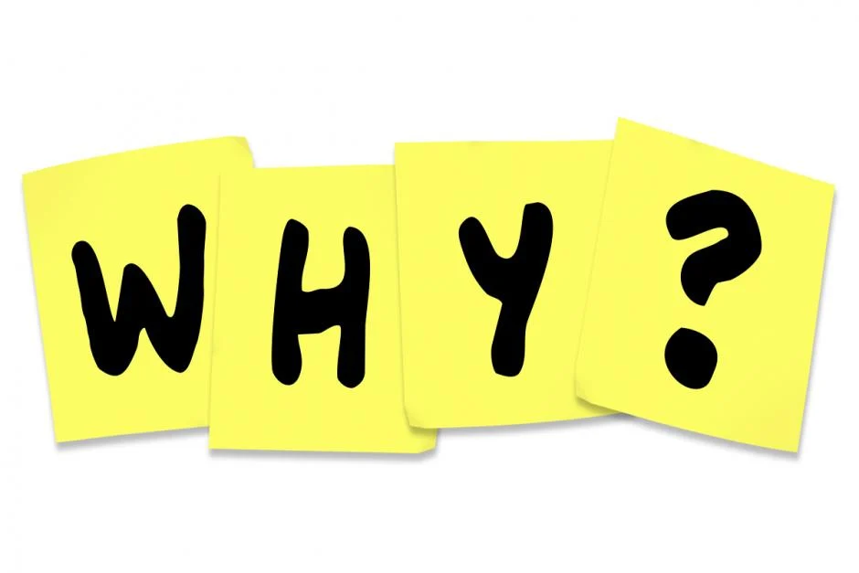

So why is it important to remeber things?
Well that depends on what your trying to remeber, for instance if yu are trying to remeber your timetable that would be very useful as when you are inbetween periods you will not need to check your phone or if you have a paper copy you will not have to check that. Even worse you may get your timetable through pc school and be about to check what you have next only to realsize that you cannot access the wifi and that you have no data.
Vocabulary often makes up a large part of an exam especialy in languages, so if you use these simple tricks you should be able to get some easy marks. Vocabulary is also useful in science as some people have a hard time trying to remember what certain scientific words mean.